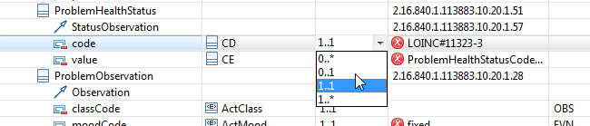

Describes using the MDHT UML Editor to review the HL7 Continuity of Care (CCD) template model.
Let's start with an example of using the MDHT UML Editor to browse the HL7 Continuity of Care (CCD) template model. This is intended to be an easy UML editor, so not every aspect of UML is visible or editable, but we attempted to make all characteristics important to CDA template design easily accessible. We have more enhancements planned, but please let us know what would make it easier to use!
The Annotations table column shows a summary of HL7 metadata that is applied to a model element using UML stereotypes. Using the MDHT UML Editor, you don't need to know the details of how UML stereotypes are used. The CDA Tools properties tab displays entry fields for values that are appropriate for the selected model element. In the example below, a code system constraint is assigned to the 'code' attribute, and a severity of Warning (a.k.a. SHOULD) is specified along with a message to be displayed when CDA documents are validated that don't satisfy this constraint. The severity level is shown as a graphical icon in the Annotation column.
Many of the model element properties may be edited within the table cells. To activate editing (if allowable), either double-click on a cell or press the Enter key (NOTE: the table row must be selected/highlighted before editing a cell within that row). In the example shown below, a class attribute's multiplicity is edited using a pull-down list. Values shown in the Annotations column are a summary of more advanced HL7 metadata; these may be modified using the CDA Tools tab in the Properties view.
The data type of a class attribute may be modified in either the table cell or using the General tab in the Properties view. The attribute type is selected using a dialog that allows searching for any model element in one of the currently open model(s). If several models are open simultaneously, then classes from all models are included in the dialog list. You can quickly narrow the selection by typing the first few characters of the class name you are searching for.